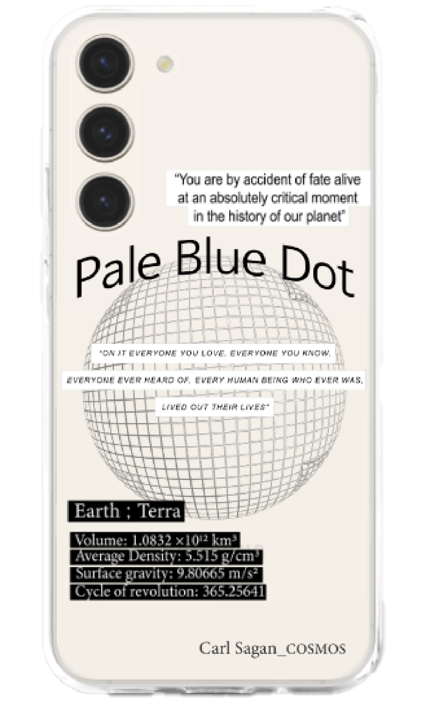

Poster Design
Pale Blue Dot
창백한 푸른 점
2023.07 ~ 2023.09
A1_594*841
Keyword
칼 세이건, 외로움, 경외감
Concept
우주를 주제로 진행한 모꼬지 전시 포스터.
칼 세이건의 <코스모스>에 나오는
'창백한 푸른 점'을 재해석하여 포스터로 디자인했다.
우주가 주는 경이로움과 허무함을 표현하고자
무채색 계열의 톤과 선을 활용해 디자인했다.
또한 칼 세이건의 <코스모스>를 인용하여
인간의 존재와 가치에 대한 사유를
불러일으킨다.
